홍성주
팀장프로젝트 디렉터
프로젝트 총괄, 기획 방향 및 콘셉트 설계
 공명체
공명체

산호의 가지가 뻗어나가는 형태를 기하학적 구조로 단순화했어요.
사각 픽셀과 곡선을 조합해 디지털 환경과 산호의 생명력을 표현했어요.

기본형 심볼에서 산호가 자라듯 가지가 뻗어나가 성장형 심볼로 변해요.

읽기 쉽도록 획을 정돈하고 사각 픽셀을 더해 디지털 감각을 표현했어요.

한자의 획과 여백을 조정해 한글 로고와 조형적 통일감을 맞췄어요.
하나의 바다를 함께 그리는 여덟 명.
프로젝트 디렉터
프로젝트 총괄, 기획 방향 및 콘셉트 설계
콘텐츠 기획 · 아카이빙
아이디어 구체화, 기획 자료 구조화 및 문서화
콘텐츠 기획 · 리서치
아이디어 도출, 레퍼런스 리서치 및 트렌드 분석
3D 그래픽 · 테크니컬 디자인
프로젝트 총괄, 기획 방향 및 콘셉트 설계
체험 디자인 · 공간 연출
체험형 전시 설계, 관람 동선 및 공간 연출
2D 그래픽 디자인
2D 비주얼 및 그래픽 에셋 제작
모션 디자인
애니메이션 및 모션그래픽 제작
인터랙션 개발
인터랙티브 시스템 및 콘텐츠 프로그래밍 총괄